🧸 Lastenurk 🦕
Pildiraamatud ja mängud 4–6-aastastele, eesti ja inglise keeles
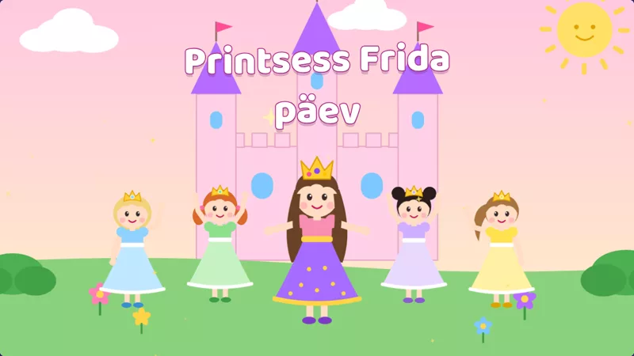
📖 RaamatPrintsess Frida päev
Frida ja tema sõbrad mängivad palli, lasevad liugu, söövad ploome ja äratavad ellu suure võlulohe.
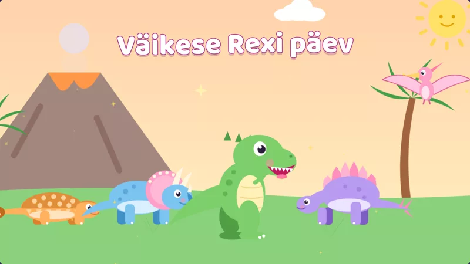
📖 RaamatVäikese Rexi päev
Väike T-rex Rex hüppab sõpradega porilompides, mängib peitust ja laseb liugu mööda suure Bruuno kaela.
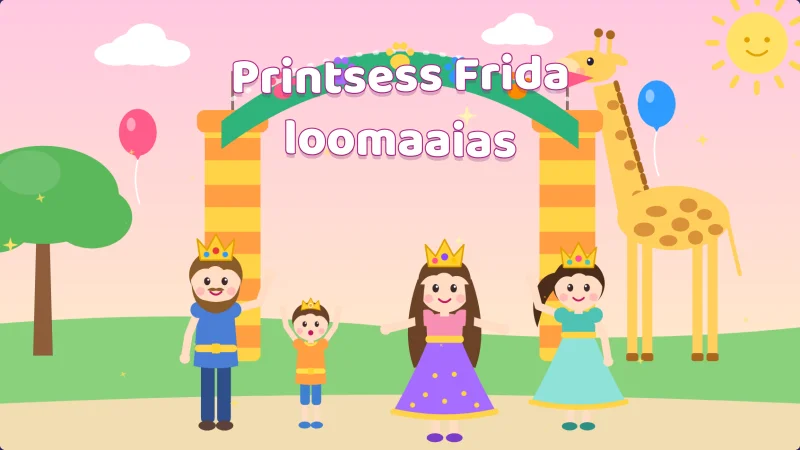
📖 RaamatPrintsess Frida loomaaias
Frida, ema, isa ja väike Uku näevad kaelkirjakut, elevanti ja lõvi ning saavad silitada kitsi, küülikuid ja kilpkonna.
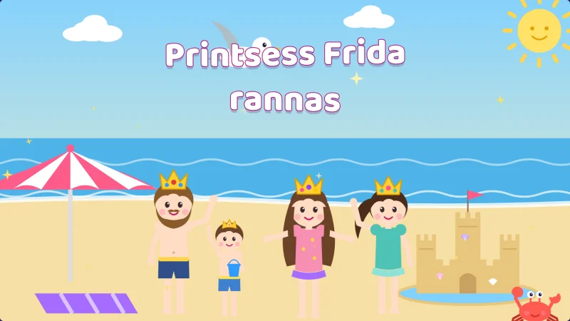
📖 RaamatPrintsess Frida rannas
Frida ehitab isaga liivalossi, ujub rõngaga, leiab krabi ja korjab karpe. Uku peidab end liiva sisse.
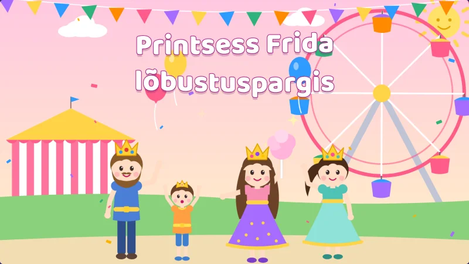
📖 RaamatPrintsess Frida lõbustuspargis
Karussell, teetassid, põrkautod, suhkruvatt ja suur vaateratas – ning kõige naljakamad peeglid.
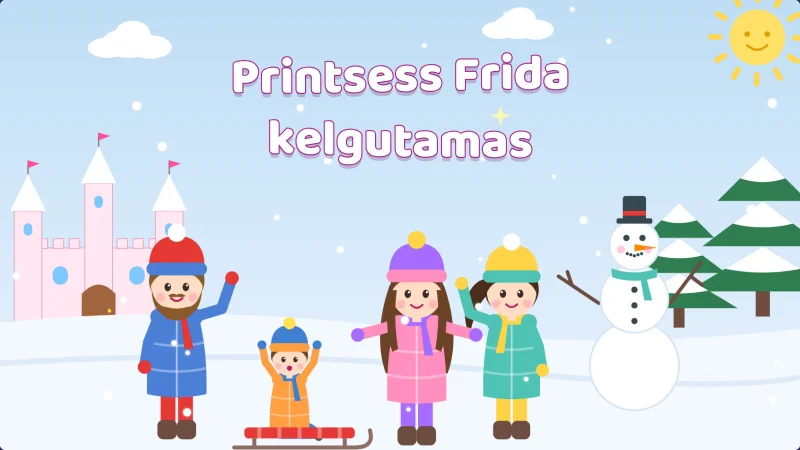
📖 RaamatPrintsess Frida kelgutamas
Lumememm, kelgumägi, lumeinglid ja lumesõda – ja pärast seda soe kakao.
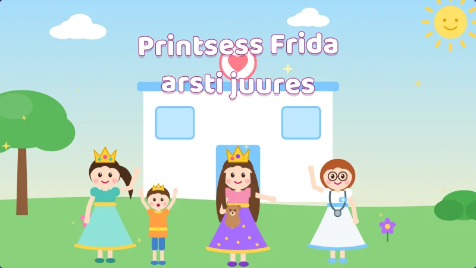
📖 RaamatPrintsess Frida arsti juures
Frida käib arsti juures: pikkus, süda, kõrvad ja üks julge süst. Hea lugeda enne päris arstivisiiti.
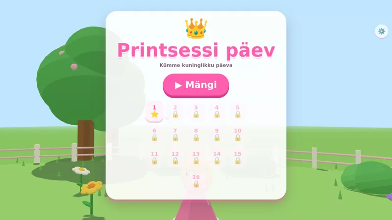
🎮 MängPrintsessi päev
3D-mäng: kuusteist päeva lossis ja aias. Lugeda pole vaja – ülesanded on piltidena.
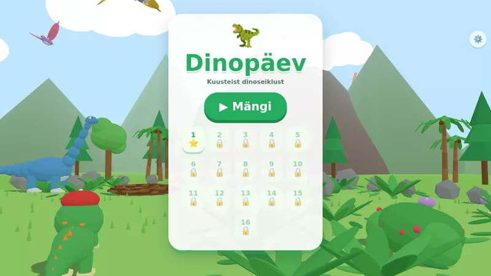
🎮 MängDinopäev
3D-mäng: kuusteist päeva dinosauruste maailmas – munad, mütsid, sõbrad ja lemmikloom.
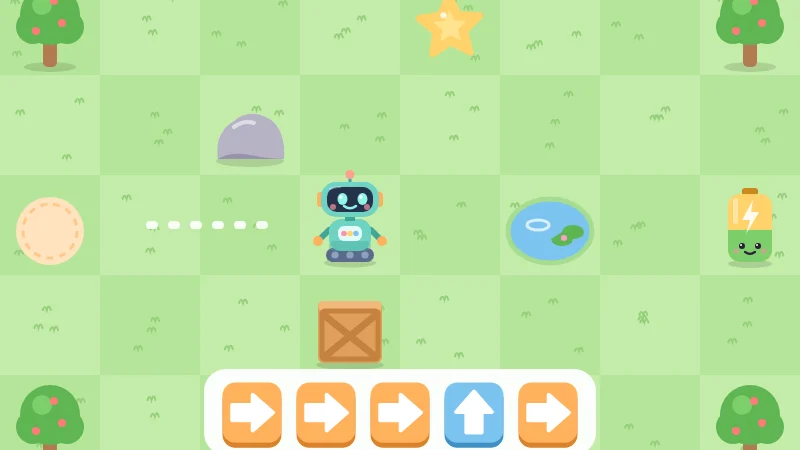
🧩 MõtlemismängRobot Piiks
Pane noolekaardid ritta ja vajuta ▶: väike robot sõidab aku juurde – liikuvad lindid, võlulauad ja lukus värav. Esimesed sammud programmeerimises.
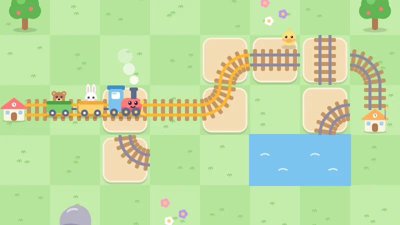
🧩 MõtlemismängRong Tuut
Keera rööpad õigeks, et väike rong jõuaks jaama ja korjaks peale loomasõbrad – üle sildade, läbi tunnelite ja pöörangute.
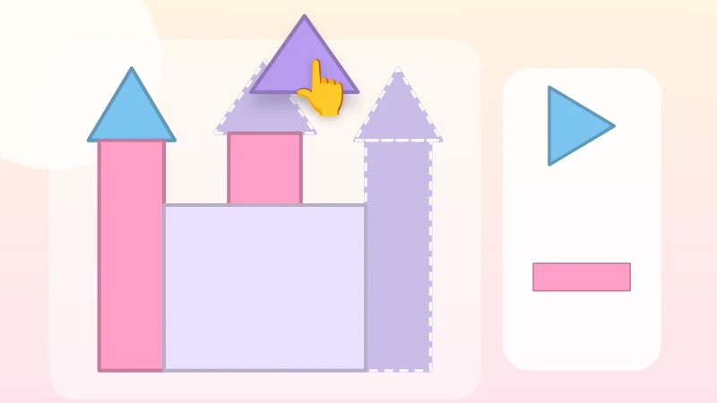
🧩 MõtlemismängKujundipusle
Lohista kolmnurgad, ringid ja ruudud varju peale ja keera need õigetpidi – valmis pilt ärkab ellu: rakett lendab, kala ujub, rong sõidab.
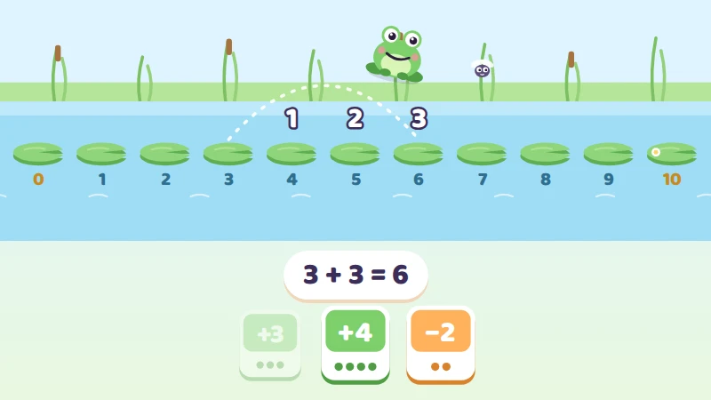
➕ MatemaatikaKonn Krooks
Liitmine ja lahutamine: kaardid +3 ja −2 panevad konna mööda numbritega vesiroosilehti hüppama ja hüpped üle lugema, kuni ta maandub kärbse juures. Kuni 20-ni.
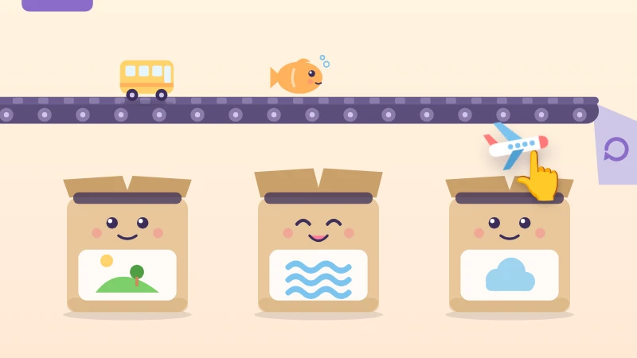
🧩 SorteerimineNäljased kastid
Iga näljane kast sööb ainult oma asju: värvi, kuju, suuruse, liigi või elupaiga järgi. Lohista need lindilt õigesse kasti – ja lõpuks sorteeri prügi õigetesse prügikastidesse.
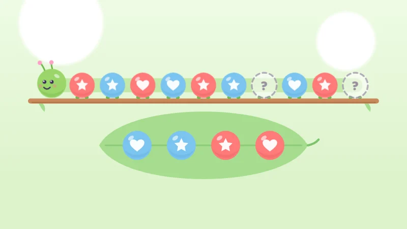
🐛 MustridMustriröövik
Punane, sinine, punane… mis tuleb järgmisena? Täida augud röövikul: värvid, pildid, suurused, täpid ja nooled, kasvavad mustrid ja üks vale lüli, mis tuleb üles leida.
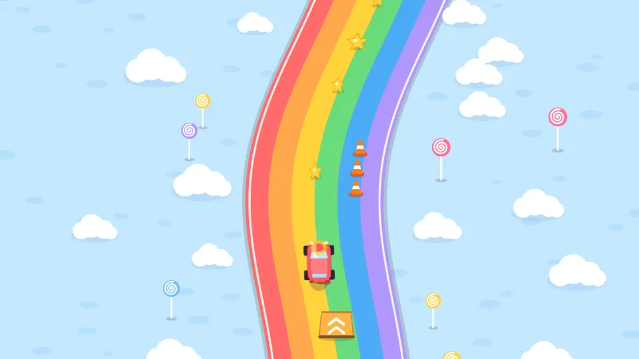
🚗 AutosõitPõrr-auto
Kalluta tahvlit ja auto keerab (või vea sõrmega): korja tähti, sõida koonustest ja kividest mööda, hüppa hüppelaualt, oota parte ja lehmi ja anna aeglasele autole signaali – vanaema juurde, randa ja lossi.